N=5 Kij Structure Study: Figure Report
Scope
This report documents the four figures generated by the current analysis and plotting pipeline:
analysis_overview.pngfeature_profiles.pngrepresentative_kij_gallery.pngn5_top1_verification_en.png
All figures were produced from the result file:
results/data/n5_strict_results.json
The relevant code paths are:
scripts/analyze_strict_results.pysrc/feature_analysis.pyscripts/plot_strict_results.py
Model Definition
The system is a network of N = 5 damped, driven, nonlinearly coupled
pendula:
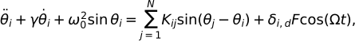
where:
dis the driven nodeK = (K_{ij})is the coupling matrixK_{ii} = 0- in this model,
K_{ij}represents the influence from nodejto nodei
This directional interpretation matters for all path and strength features.
Response and Selectivity Metrics
For a fixed pair (K, \Omega), the code simulates the system and extracts the
steady-state Fourier response amplitude at the driving frequency:
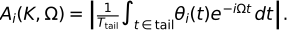
Let the set of non-driven nodes be
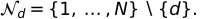
The dominant non-driven node is
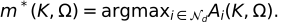
The selectivity metric used in both the search and the final verification plot is
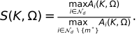
This is a ratio of the strongest non-driven response to the second strongest non-driven response. It is not the same as the absolute peak amplitude.
Candidate Labels Used in the Analysis Figures
Each coarse candidate is assigned one of four labels:
stable_high: candidate appears infinal_verificationand remains stable under final multi-seed verificationunstable_peak: candidate entered the robustness/refinement pipeline but failed before becoming a stable final winnermedium: candidate did not enter the top unstable/stable pool, but its coarse best selectivity is at or above the 75th percentile of all coarse candidateslow: all remaining candidates
These labels are used in analysis_overview.png, feature_profiles.png, and
representative_kij_gallery.png.
Feature Definitions
Below, K denotes the 5 x 5 coupling matrix and d denotes the driven
node. The coarse-response target node m is the non-driven node with the
largest coarse-stage amplitude among the non-driven nodes.
Metadata and Response-Level Features
-
kidx
Integer identifier of the sampled matrix. -
coarse_rank
Rank of the candidate after sorting all coarse candidates bybest_selectivityin descending order. -
best_omega
Coarse-stage frequency that maximizes the coarse selectivity for this candidate. -
best_selectivity
Coarse-stage best selectivity:
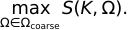
-
target_idx
Index of the dominant non-driven node in the coarse-stage best-amplitude vector. -
target_amp
Amplitude of the dominant non-driven node at the coarse-stage best frequency:
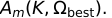
-
second_amp
Amplitude of the second strongest non-driven node at the same frequency. -
target_dominance_coarse
Ratio between the dominant and second dominant non-driven amplitudes:
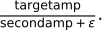
coarse_target_share
Fraction of total non-driven amplitude captured by the target node:
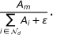
-
final_avg_selectivity
Mean final selectivity across all final verification seeds. -
final_min_selectivity
Minimum final selectivity across all final verification seeds.
Norm and Sign Features
fro_norm
Frobenius norm of the full matrix:
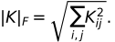
Meaning: overall coupling magnitude.
asymmetry_norm
Frobenius norm of the antisymmetric mismatch:
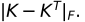
Meaning: absolute nonreciprocity strength.
asymmetry_ratio
Normalized nonreciprocity level:
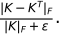
Meaning: nonreciprocity relative to total coupling strength.
positive_ratio
Fraction of off-diagonal nonzero entries with positive sign:
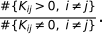
0,\; i\neq j\}}{\#\{K_{ij}\neq 0,\; i\neq j\}}. ">Meaning: sign balance of excitatory-like couplings.
negative_ratio
Fraction of off-diagonal nonzero entries with negative sign:
Meaning: sign balance of suppressive-like couplings.
Magnitude Statistics
mean_abs_weight
Mean absolute off-diagonal coupling magnitude:
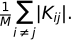
-
std_abs_weight
Standard deviation of the absolute off-diagonal magnitudes. -
max_abs_weight
Maximum absolute matrix entry:
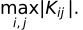
These three features describe how strong and how uneven the coupling weights are.
Node Strength Features
Because K_{ij} means j \to i, the row sum measures inflow and the column
sum measures outflow.
Define
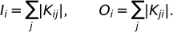
Then:
-
drive_in_strength = I_d
Absolute inflow received by the driven node. -
drive_out_strength = O_d
Absolute outflow emitted by the driven node. -
target_in_strength = I_m
Absolute inflow received by the target node. -
target_out_strength = O_m
Absolute outflow emitted by the target node. -
target_sink_bias
Net sink-like tendency of the target:
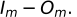
Positive values mean the target behaves more like an absorber/sink than a broadcaster/source.
Direct and Multi-Hop Path Features
target_direct_from_drive
Direct drive-to-target link strength:
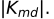
Meaning: one-step directional coupling from the driven node to the target.
target_path_2hop
Absolute two-hop drive-to-target path score:
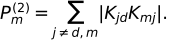
Meaning: total strength of all two-step directed paths from the drive to the target.
target_path_advantage_2hop
Target two-hop score normalized by the strongest competing non-driven node:
Meaning: whether the target has a stronger two-hop route than other candidates.
target_path_3hop
Absolute three-hop drive-to-target path score:
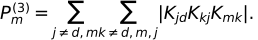
Meaning: total strength of all three-step directed paths from the drive to the target.
target_path_advantage_3hop
Target three-hop score normalized by the strongest competing node:
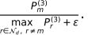
Figure 1: analysis_overview.png
Purpose
This figure provides a compact overview of the search outcome and the first layer of feature screening.
Plot Construction
It is a 2 x 2 panel figure:
Top-left: coarse selectivity histogram
- Input data: all coarse candidates
- Quantity plotted:
best_selectivity - Plot type: histogram
- Additional markers:
- vertical line at the 75th percentile
- vertical line at the 90th percentile
Meaning: shows how rare high coarse selectivity is and how extreme the upper tail is.
Top-right: label counts
- Input data: all coarse candidates after label assignment
- Plot type: bar chart
- Categories:
stable_highunstable_peakmediumlow
Meaning: gives the class balance of the entire run.
Bottom-left: asymmetry ratio vs coarse selectivity
- x-axis:
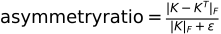
- y-axis:
best_selectivity - Color: candidate class label
Meaning: shows whether stronger nonreciprocity alone explains coarse selectivity.
Bottom-right: most discriminative structural features
- Input data: per-label feature means over all labeled candidates
- Score used for each feature
f:
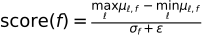
where:
- \mu_{\ell,f} is the mean of feature f inside label \ell
- \sigma_f is the global standard deviation of feature f
- Plot type: horizontal bar chart of the top-scoring features
Meaning: this panel identifies which structural quantities change the most across the sample classes, relative to their overall variability.
Figure 2: feature_profiles.png
Purpose
This figure gives a more direct visual comparison of the top-ranked structural features across the sample classes.
Plot Construction
- The code first sorts all structural features by the discriminative score defined above.
- It then selects the top four features.
- The figure is a
2 x 2panel layout, one panel per feature.
Each panel uses:
- x-axis: sample class (
stable_high,unstable_peak,medium,low) - y-axis: feature value
- points: jittered scatter of all samples in the class
- black horizontal segment: mean feature value in that class
Meaning: this figure is intended to reveal whether the top-ranked structural features show class separation, overlap, outliers, or broad spread.
Figure 3: representative_kij_gallery.png
Purpose
This figure shows representative coupling matrices for the main sample classes.
Plot Construction
The gallery contains one matrix per class:
Best stableBest unstableBest mediumBest low
Selection rule:
Best stable: highestfinal_avg_selectivityBest unstable: highestbest_selectivityBest medium: highestbest_selectivityBest low: highestbest_selectivity
Each panel is:
- a heatmap of the full
5 x 5matrixK - plotted with a diverging colormap centered at zero
- scaled symmetrically with
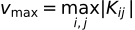
Meaning:
- red: positive coupling
- blue: negative coupling
- pale/white: weak coupling
This figure is meant for qualitative visual comparison of structural motifs across classes.
Figure 4: n5_top1_verification_en.png
Purpose
This is the detailed verification figure for the strongest verified winner of the full run.
Candidate Selection
The current code always chooses the strongest verified candidate:
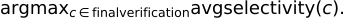
If no final candidates exist, the script falls back to refined_results, then
robustness_test, then coarse_results.
Plot Construction
The figure has five panels arranged over three rows.
Row 1, left: amplitude-frequency plot
- Input: selected winner
K - Frequency grid:
omega_fine - Seed: first final seed
- Plotted quantity:
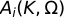
for all nodes i
Additional elements:
- dashed vertical line at the frequency where the recomputed selectivity peaks
- annotation showing the peak selectivity value
Important note: the annotated "Best" refers to peak selectivity, not maximum absolute amplitude.
Row 1, right: zoom near best frequency
- Same quantity as above
- Restricts the x-range to a window centered on the best frequency
Meaning: local view of the resonance structure near the selected operating point.
Row 2, left: seed robustness bar chart
- x-axis: node index
- y-axis: Fourier amplitude at the selected best frequency
- bars: one bar group per final verification seed
Meaning: tests whether the target-node dominance persists across seeds.
Row 2, right: selectivity vs Omega
- x-axis:
\Omega - y-axis:
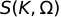
- input: recomputed fine frequency sweep for the chosen winner
Additional elements:
- dashed vertical line at the best operating frequency
- optional shaded target band if target-band mode is enabled
Meaning: this panel shows directly how sharply the chosen matrix concentrates response into a single non-driven node as the drive frequency changes.
Row 3: time series
- x-axis: time
- y-axis: angle
\theta_i(t) - plotted for all nodes at the selected best frequency and one seed
Meaning: gives a time-domain view of the winner's dynamical behavior.
Practical Reading Guide
If the goal is to understand what makes a K successful, the recommended
reading order is:
analysis_overview.png- especially the bottom-right feature-importance panelfeature_profiles.png- to inspect overlap and separation by classrepresentative_kij_gallery.png- to visually compare matrix motifsn5_top1_verification_en.png- to inspect the final winning matrix in detail
File References
results/figures/analysis_overview.pngresults/figures/feature_profiles.pngresults/figures/representative_kij_gallery.pngresults/figures/n5_top1_verification_en.png
Rendered Figures
The images below are embedded directly from the local results directory.
Analysis Overview
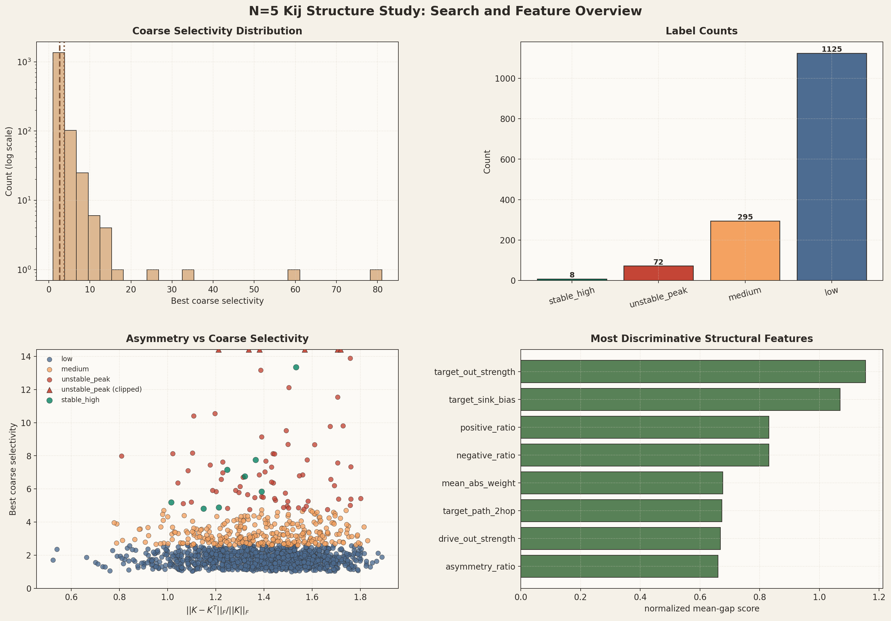
Feature Profiles
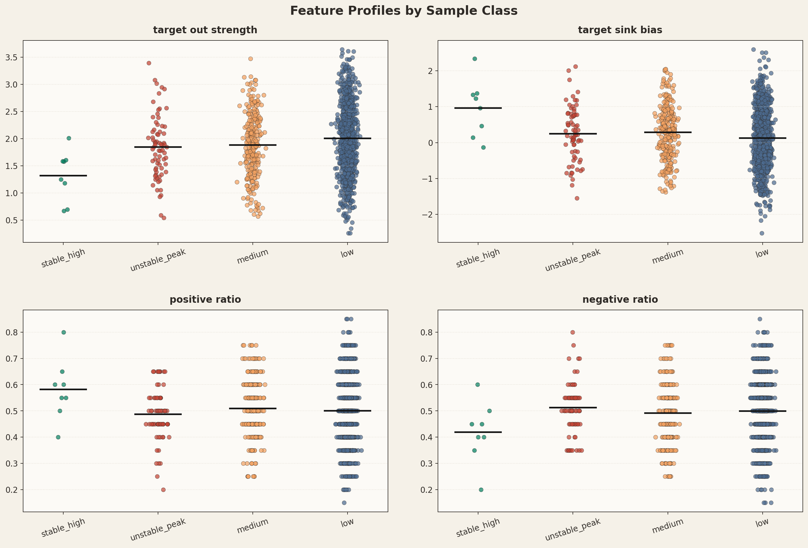
Representative Kij Gallery
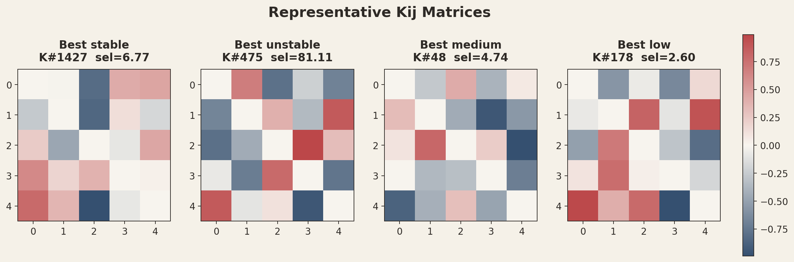
Top-1 Verification
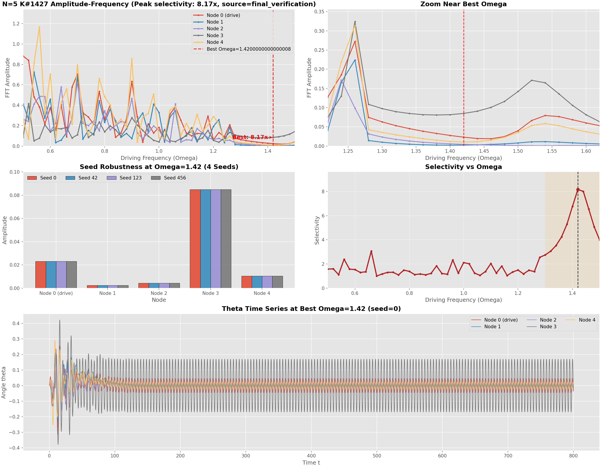